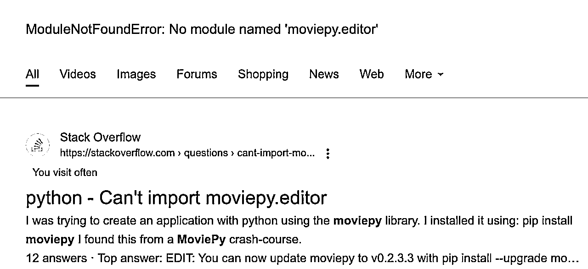
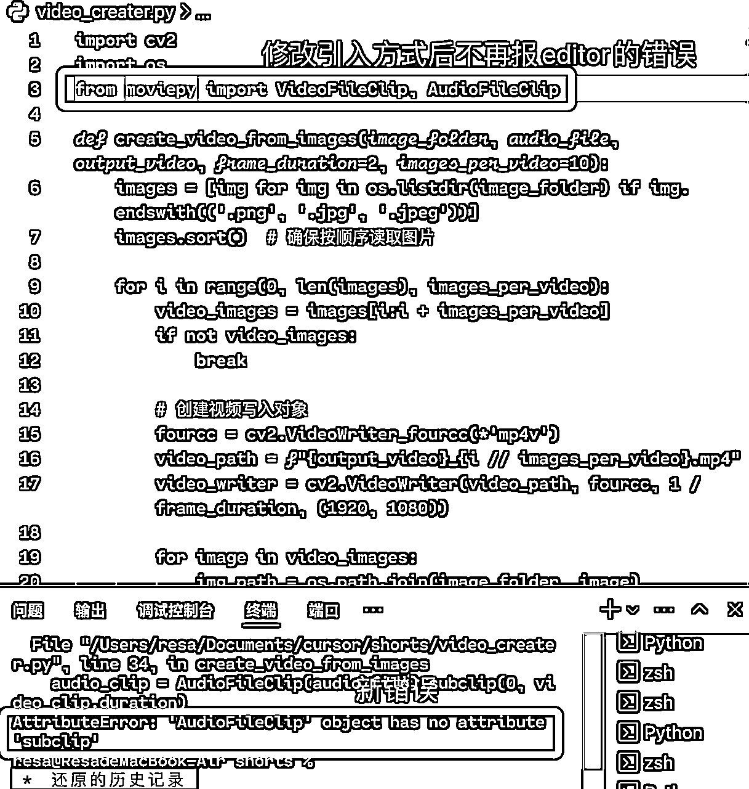
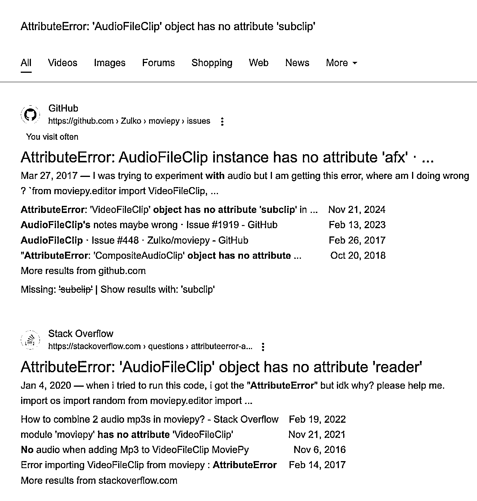
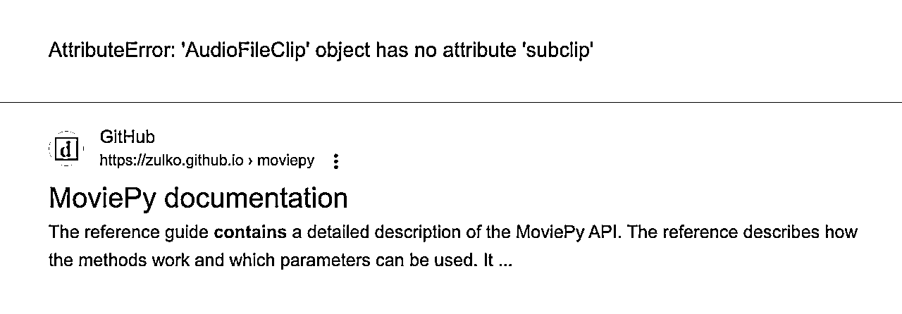
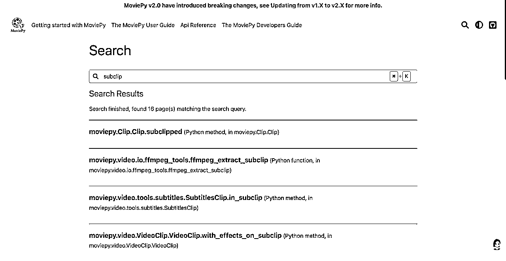
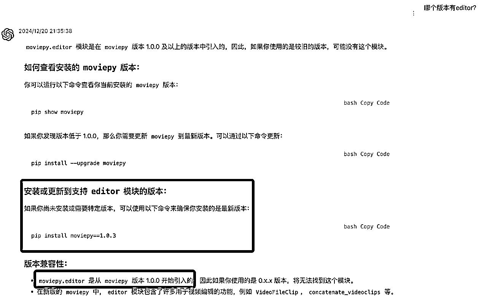
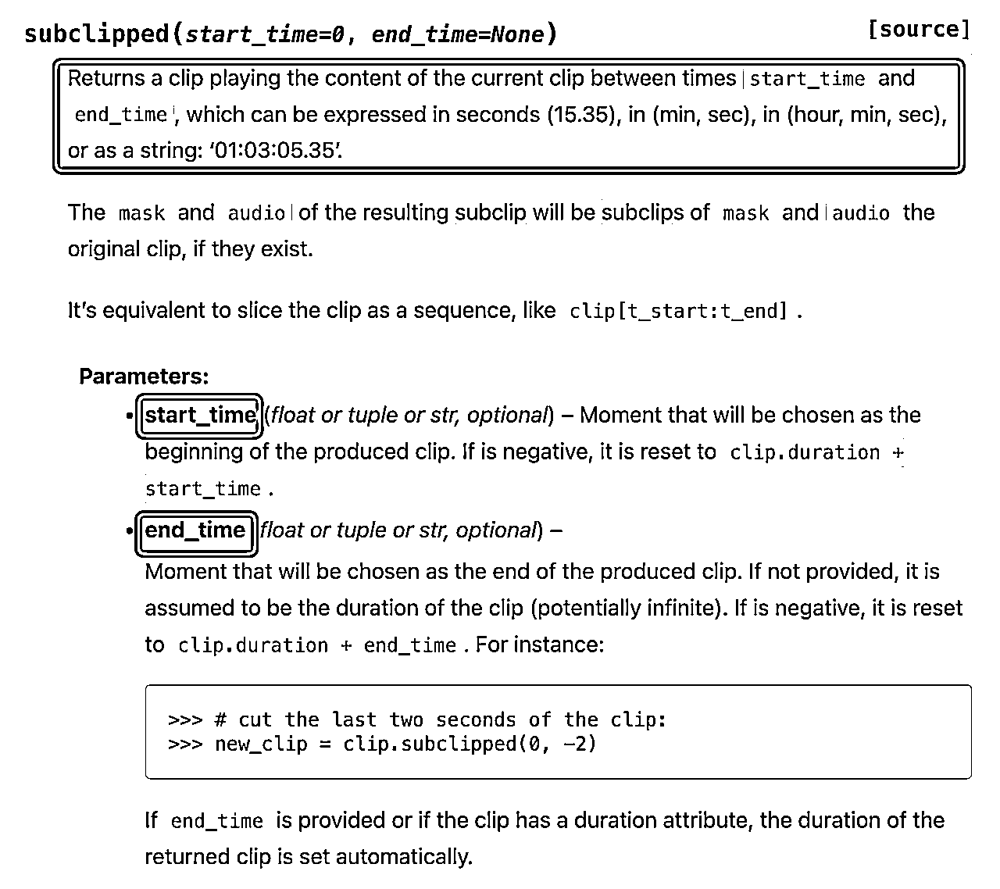

来源：https://lkqtstaxxx.feishu.cn/docx/SmyddCfBMoKSzrxRY8IcbddRncg
大家好，我是李灿，一个来自湖南的前端工程师。有了AI后，GPT就是我的编程老师，前端很多知识都是边做边跟GPT学的，现在有了Cursor，发现效率可以得到进一步提升。这次航海和Cursor玩得很开心，今天就和大家分享一下与Cursor协作做饭（编程）中，让它找盐（解决bug）的故事。
故事梗概：找盐没找到、找酱油没找到、于是把菜做成了甜的而我不爱吃，不死心的我终于找到盐和酱油，重新做饭吃上。以及整个做饭过程带给我的血泪教训[苦涩]！
省流版：看最后的做饭总结。
编程如做饭，没盐怎么行！
航海任务中，有一个任务是用 Cursor 批量剪YouTube shorts视频，输入提示词，告诉它我要做的菜是批量剪视频，要什么口味也都说得清清楚楚，但运行文件立马报错：
ModuleNotFoundError: No module named 'moviepy.editor'
字面理解一下，就是“moviepy.editor"不存在，就好像盐找不到了，我的饭做不下去了。
我：Cursor，我的盐找不到(“moviepy.editor"找不到)
Cursor：
你检查检查：
你确实买调料了吗（确保安装了moviepy）、
食谱是最新的吗（Python版本正确吗）、
锅好使吗（检查IDE、重启IDE）
我：我的moviepy是2.1.1，但还是没找着盐
Cursor：
你调料放对地方了吗（检查安装路径）、
重新买一份调料呗（重装moviepy）、
食谱新吗（检查Python版本）、
换个干净的厨房呢（使用虚拟环境）、
你的食材都买好了吗（相关依赖是否安装好）、
炒个小分量的菜试试（运行简单测试）
我：大哥，我都试了，还是找不到盐
Cursor：哦，你再把上面两次提到的方法重复一遍
我：

附提问截图：
第一次：
第二次：

参考答案做完出现了新错误，第三次问：
可以看出第三次的回答跟前两次很雷同，来回让我做同样的事，但没能实质解决报错。
于是我又去找我的好朋友：谷歌。他很慷慨，一下子给了好多页结果，点开第一条：

在答案里直接找使用盐的方式（其他引入方式），看到下面这条还比较新的答案，参考它对代码进行了修改

妈妈，我的盐终于不报错了！
但是，它开始报新的错误：

AttributeError: 'AudioFileClip' object has no attribute 'subclip'
如图，又开始找不到酱油（subclip）了！
我：大哥，我的酱油不见了（找不到subclip）
Cursor：哦，那是因为它改名叫生抽了（叫我把subclip改成set_duration）
我：大哥，叫生抽也不好使啊，现在报“生抽也不见了”
Cursor：哦，那是因为它改名叫酱油了（叫我把set_duration改成subclip）
我：拜托，酱油和生抽都不见了
Cursor：哦，那你继续用酱油吧（还叫我用subclip）
我：

附提问截图：
第一次问，它叫我把subclip改成set_duration:
改完继续报错，第二次问，又叫我改回subclip：

再次问它，跟它说了没有subclip也没有set_duraiton，它还叫我用subclip：

好吧，cursor大哥它失忆了，我再次找到谷哥哥:

当时并没有完全能匹配到酱油（subclip）的结果（现在有一条），但是这一页有调料商（moviepy）的说明书（官方文档）：

我想官方文档应该有关于酱油（subclip）相关的使用方法吧，找到搜索按钮就输入酱油（subclip），然后结果没一个精确匹配上（AudioFleClip.subclip)：

此时，我已放弃moviepy这套调料了，让cursor用moviepy之外的方式来做饭：

如果它一次成功就没有后面的故事了，中间还是遇到多次bug，最终实现的效果还是有瑕疵，此时距离我查看moviepy的文档已经差不多过去了两小时，快十二点了，要写日志了（半夜了，饭虽然没吃上，但做饭笔记还是要写的[旺柴]）。
写日志的时候回头去看了航海手册里贴出来的代码，教练明明也用了同样的盐（moviepy.editor），也用了同样的酱油（subclip），为啥我的就是不行呢？
不死心的我再去看了一眼调料商的说明书（官方文档），终于看到那个升级说明了，点进去一看，很清楚地说明了为什么找不着盐也找不着酱油（上面两个bug）：
在新版本里盐换了位置（不存在moviepy.editor并给出了正确的引入方式），酱油也改名了（很多方法如subclip、set_audio进行了重命名）：

既然我们知道问题出在哪里，那么解决方案就很明显：
一是降低版本，使用含有moviepy.editor的版本（使用1.x版本里的盐和酱油，Cursor大哥认识的）；
二是根据新版本来修改代码（使用新版本的盐和酱油，使用方法需要自己或Cursor大哥学习一下）。
第一个方案要怎么执行也可以直接问AI，第二个方案如果自己看不懂代码也没关系，可以让cursor学习了给你来改：


妈妈，我终于能正确地用上盐和酱油了，可以吃上饭了！（参考文档进行了修改后可以正常运行了。）
这次做饭找不到盐和酱油，本质上是同一个原因，就是因为调料商更新了版本，盐和酱油的使用方式和以前不一样，所以用老方法是行不通的。而Cursor大哥还不知道调料商更新了，它只知道以前的用法，所以无论我怎么问它也给不出新方法。（moviepy的版本更新了，对原来的代码进行了重构，所以原来的使用方式在新版本里都不起作用了，但是AI模型没能那么快地同步到版本迭代后的知识，然后我拿一个它不知道的东西一个劲问它，它当然不知道啦。）
回顾自己找盐和酱油过程，其实可以发现：
自己根本没动脑子，只是惯性问cursor、问google、查文档，只会问现象“盐找不到啦”，不会问原因“为什么找不到盐了”。
在Cursor也无法帮我找到盐的时候，我如果继续问一问：
我做饭的家伙都准备好了，但一直报“盐找不到啦”，为什么？咋解决？
如果我的环境没有问题，Python版本也正确，相关依赖也都正确安装了，但是仍然报ModuleNotFoundError: No module named 'moviepy.editor'这个错误，可能的原因是什么

截图是我问的GPT3.5，让它解决那个报错也会进入鬼打墙，但是如果停下来问问它（或者cursor）这个问题，它给出的原因里就可能存在正确答案。
假设moviepy已经正确安装了，那么可以根据截图的第二条继续问：哪个moviepy的版本含有editor？

使用了正确的版本，后面也就没有找不到酱油（subclip）的问题了。
自己在阅读相关内容时也不认真，但凡仔细一点，都可以从几次搜索中get到正确答案：
第一次谷歌“找不到盐”的结果里就提到了是由于升级导致报这个错误：

第二次搜索调料商说明书时，如果注意到上方版本升级的提醒（breaking changes），或者点进去与subclipped（与subclip非常像）的页面，就会发现subclipped就是更新后的subclip（酱油改名叫生抽啦），功能是一样的：


这里附带几个小知识：
@Web是让cursor联网去查询来解决问题
@链接 可以直接让它去读取链接内容
@Docs 可以添加文档，里面有一些预设的，也可以新增，比如新增moviepy的文档后，后面引用可以直接@MoviePy

总结一下，在解决具有明确报错信息的bug时，可以先让cursor解决，如果鬼打墙时，可以停下来尝试：
1、我按照上面的方案完成了某某某操作，都正确/正常，但还是报同样的错误，可能的原因是什么？要如何解决？
2、@Web让其联网找找解决方案
3、@Codebase，如果问题不是单一的，让它基于整个项目上下文来思考一下
4、使用其他GPT、谷歌、官方文档检索更多信息
可以使用google来搜索一下，你的问题很大概率是别人已经遇到过的，在stackoverflow.com以及github上该仓库的Issues下找到相关问题的可能性也很大，再就是翻翻官方文档找找相关的内容，比如本次bug里遇到的editor、subclip等。如果明确知道能通过某个链接或阅读文档解决问题，可以让cursor @链接或@Docs添加文档来学习解决。
5、让它换一个方式来实现同样的需求
6、别忘了咱们航海群，去群里提问吧！（先搜索关键词看看是否已经有相同的提问和回答）
7、还可以场外求助懂这一块的朋友，也可以在stackoverflow.com以及github.com对应的仓库Issues(如https://github.com/Zulko/moviepy/issues）下进行提问。
我的分享到此结束，谢谢大家！